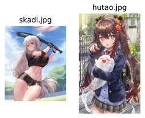

imgutils.tagging.deepgelbooru
- Overview:
Tagging utils based on deepgelbooru.
Inspired from LagPixelLOL/deepgelbooru trained by @LagPixelLOL.
ONNX model is hosted on deepghs/deepgelbooru_onnx.
get_deepgelbooru_tags
- imgutils.tagging.deepgelbooru.get_deepgelbooru_tags(image: str | PathLike | bytes | bytearray | BinaryIO | Image, general_threshold: float = 0.3, character_threshold: float = 0.3, drop_overlap: bool = False, fmt=('rating', 'general', 'character'))[source]
Extract tags from an image using the DeepGelbooru model.
- Parameters:
image (ImageTyping) – Input image (can be PIL Image, path, or bytes)
general_threshold (float) – Confidence threshold for general tags
character_threshold (float) – Confidence threshold for character tags
drop_overlap (bool) – Whether to remove overlapping tags
fmt – Format of the output, specifying which tag categories to include
- Returns:
Dictionary containing predicted tags by category
Note
The fmt argument can include the following keys:
rating: a dict containing ratings and their confidencesgeneral: a dict containing general tags and their confidencescharacter: a dict containing character tags and their confidencestag: a dict containing all tags (including general and character, not including rating) and their confidencesprediction: a 1-dim prediction result of image
- Example:
Here are some images for example
>>> from imgutils.tagging import get_deepdanbooru_tags >>> >>> rating, features, chars = get_deepdanbooru_tags('skadi.jpg') >>> rating {'rating:safe': 0.9897817969322205, 'rating:questionable': 0.010265916585922241, 'rating:explicit': 5.27501106262207e-05} >>> features {'1girl': 0.9939777851104736, 'bangs': 0.5032391548156738, 'black_border': 0.9943548440933228, 'black_gloves': 0.5011611580848694, 'blue_sky': 0.6877812743186951, 'blush': 0.5543793439865112, 'breasts': 0.8268730044364929, 'cloud': 0.8504312634468079, 'cowboy_shot': 0.6008235216140747, 'crop_top': 0.6635788083076477, 'day': 0.8496971130371094, 'gloves': 0.6107009053230286, 'hair_between_eyes': 0.6682944297790527, 'holding': 0.5619475841522217, 'holding_baseball_bat': 0.5141727328300476, 'letterboxed': 1.0, 'long_hair': 0.9884189367294312, 'looking_at_viewer': 0.5673102140426636, 'midriff': 0.6290558576583862, 'navel': 0.9631234407424927, 'no_hat': 0.7978750467300415, 'no_headwear': 0.7577933073043823, 'outdoors': 0.711855411529541, 'parted_lips': 0.5452844500541687, 'pillarboxed': 0.9841412901878357, 'red_eyes': 0.9587860107421875, 'shirt': 0.6720132231712341, 'short_sleeves': 0.707771360874176, 'silver_hair': 0.6673922538757324, 'sky': 0.8709818124771118, 'solo': 0.9614332914352417, 'sportswear': 0.778618574142456, 'standing': 0.6842772364616394, 'sweat': 0.9076309204101562, 'thighs': 0.580970823764801} >>> chars {'skadi_(arknights)': 0.963334321975708} >>> >>> rating, features, chars = get_deepdanbooru_tags('hutao.jpg') >>> rating {'rating:safe': 0.998850405216217, 'rating:questionable': 0.0016517043113708496, 'rating:explicit': 0.00012511014938354492} >>> features {'1girl': 0.9829281568527222, ':p': 0.8942179679870605, 'ahoge': 0.8733786344528198, 'backpack': 0.6322965621948242, 'bag': 0.9987059831619263, 'bag_charm': 0.9754380583763123, 'bangs': 0.6810560822486877, 'black_border': 0.9708783626556396, 'blush': 0.6356005668640137, 'bow': 0.5633739233016968, 'brick_wall': 0.5315946340560913, 'brown_hair': 0.9397273063659668, 'building': 0.9229899644851685, 'charm_(object)': 0.9006360769271851, 'city': 0.9020788669586182, 'cityscape': 0.9547433257102966, 'cowboy_shot': 0.5296419262886047, 'flower': 0.8253411054611206, 'hair_between_eyes': 0.5619837045669556, 'hair_flower': 0.827775776386261, 'hair_ornament': 0.9356369972229004, 'hair_ribbon': 0.5288076996803284, 'jacket': 0.6336134076118469, 'letterboxed': 1.0, 'long_hair': 0.9703260660171509, 'looking_at_viewer': 0.8188957571983337, 'phone_screen': 0.9579575061798096, 'pillarboxed': 0.9954615831375122, 'plaid': 0.9725286364555359, 'plaid_skirt': 0.9638454914093018, 'pleated_skirt': 0.7226817607879639, 'red_eyes': 0.5321246385574341, 'red_nails': 0.5493091344833374, 'school_bag': 0.9863408803939819, 'school_uniform': 0.6794291734695435, 'shirt': 0.5062431693077087, 'shoulder_bag': 0.9325523376464844, 'skirt': 0.9223778247833252, 'skyscraper': 0.7728177905082703, 'sleeves_past_wrists': 0.7257078886032104, 'smile': 0.5357834100723267, 'solo': 0.6939406991004944, 'thighhighs': 0.7054290771484375, 'tongue': 0.9990814924240112, 'tongue_out': 0.9992499351501465, 'twintails': 0.5012531876564026, 'very_long_hair': 0.7461407780647278} >>> chars {}